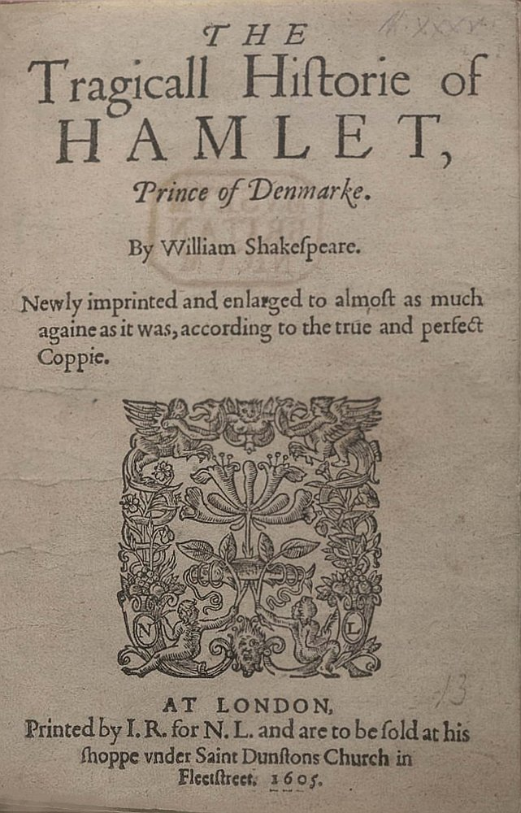

Le Baroque est un mouvement artistique qui a vu le jour en Italie au milieu du XVIe siècle.
Il s'est progressivement étendu dans toute l'Europe et dans plusieurs disciplines :
Architecture
Fontaine de Trevi (Rome, 1732-1762, Nicola Salvi et Giuseppe Pannini)
Sculpture
Pegasus (Jardin des Tuileries)
Peinture
L'apothéose des Médicis (palais Medici-Riccardi, Florence, vers 1672, Luca Giordano)
Musique & Danse
Concerto brandebourgeois n°4, premier mouvement Jean-Sebastian Bach
Danse baroque
Théâtre

Hamlet, William Shakespeare
Littérature & Poésie
« Et la mer et l'amour ont l'amer pour partage,
Et la mer est amère, et l'amour est amer,
L'on s'abîme en l'amour aussi bien qu'en la mer,
Car la mer et l'amour ne sont point sans orage.
Celui qui craint les eaux qu'il demeure au rivage,
Celui qui craint les maux qu'on souffre pour aimer,
Qu'il ne se laisse pas à l'amour enflammer,
Et tous deux ils seront sans hasard de naufrage.
La mère de l'amour eut la mer pour berceau,
Le feu sort de l'amour, sa mère sort de l'eau,
Mais l'eau contre ce feu ne peut fournir des armes.
Si l'eau pouvait éteindre un brasier amoureux,
Ton amour qui me brûle est si fort douloureux,
Que j'eusse éteint son feu de la mer de mes larmes. »
À Philis, Recueil de Vers, Pierre de Marbeuf, 1628
Le terme « baroque » proviendrait du portugais barroco qui désigne une perle irrégulière.
Cette difformité observée en joaillerie s'est alors appliquée aux œuvres caractérisées par une exagération, une ornementation excessive,
une surchage décorative, une exubérance des formes ou encore tout ce qui pouvait relever du
« bizarre » ou de l'étrangeté.
La littérature baroque n'échappe pas à la règle : les thèmes abordés traduisent la volonté de bousculer les certitudes,
heurter les consciences,
exalter les sensations.
Ce mouvement littéraire puise son inspiration dans les bouleversements historiques, philosophiques et politiques survenus en Europe au XVIe siècle, qui vont instaurer un fort
sentiment d'instabilité,
un chaos,
une insécurité.
Le monde n'est qu'illusion et les apparences sont trompeuses.
Des événements historiques
Des guerres de religion avec la Réforme protestante et la Contre-Réforme catholique opposent catholiques et protestants dans leurs valeurs
et leurs représentations : l'austère et sobre style du protestantisme contre le grandiose et riche style du catholicisme.
Intérieur d'une église catholique (Autriche)Intérieur d'une église protestante (Montauban)
Des bouleversements scientifiques
Le progrès technique (par exemple l'astrolabe, la caravelle ou encore le microscope optique)
Les Grandes Découvertes (Christophe Colomb et les Amériques en 1492, Jacques
Cartier et le Canada en 1534, Magellan à partir de 1519, etc.).
Et la révolution en astronomie
Des avancées scientifiques majeures : Nicolas Copernic contredit le géocentrisme en
privilégiant l'héliocentrisme : le Soleil est au centre de l'Univers !
Les esprits et les sens sont chamboulés :
le monde est perçu comme illusoire, changeant, incertain, en transformation, en mouvement instable.
Ce déséquilibre va alors nourrir l'imagination des auteurs littéraires.
Vanité, thème baroque. Huile sur toile de Bartholomaeus Bruyn le Vieux (1524).
Des thèmes récurrents se dégagent des différentes œuvres :
L'illusion, le rêve (les sens nous trompent)
Le changement, la métamorphose (du monde et de l'être)
L'instabilité
La duplicité
Le bizarre
Le grandiose
La mort est également très présente.
Ces thèmes sont dérivés de 4 principes d'écriture :
Mélanger les genres et les registres
Exprimer les hésitations du Moi et l’instabilité du monde
Mêler les contraires jusqu’à les confondre
Exprimer l’excès et l’extrême
Les auteurs expriment les sujets de préoccupation par une écriture chargée en figures de style telles que :
La métaphore
L'hyperbole
L'allégorie
L'antithèse et l'oxymore
Le mélange des genres
La mise en abyme
L'utilisation des verbes de mouvement
De multiples personnages et intrigues
Le baroque se décline en deux prolongements opposés : le burlesque et la préciosité.
Le premier s'attache à présenter l'instabilité du monde et des êtres de façon ironique, parodique, et même caricaturale.
La seconde usera de l'exagération et du grandiloquent dans le raffinement et l'élégance de certains mondains, le thème favori étant l'amour.
La littérature baroque peut être qualifiée de littérature de l'excès par opposition au sage classicisme qui lui succèdera à partir de 1660.